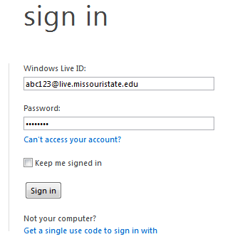
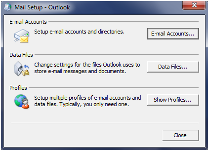
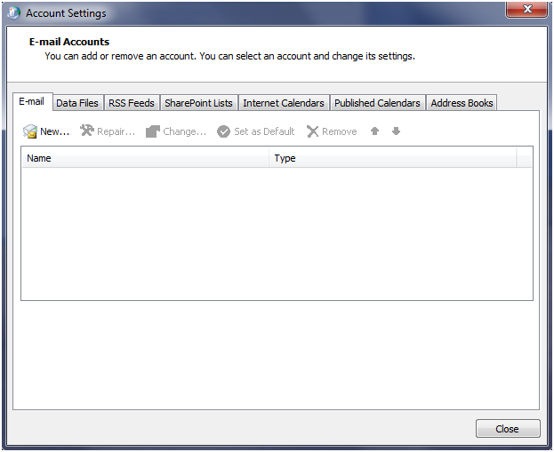
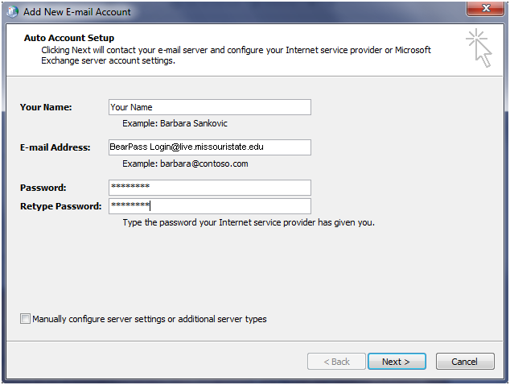
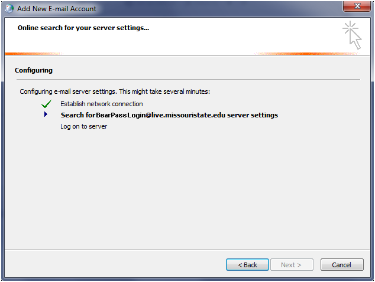
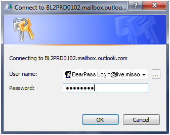

Outlook Mail Setup
- Before you begin setting up Outlook, you should ensure you are using the correct password. Open up an Internet browser and go to Outlook.com
For your Windows Live ID, enter your BearPass login followed by @live.missouristate.edu
For your Password, enter your Live@EDU E-mail password. If it does not work, you may need to change your password at cams.missouristate.edu

- Make sure Outlook is closed, then click on "Start" » "Control Panel"
- Open up Mail (it will be listed as mail 32bit on 64bit systems).
- Select Email Accounts.

- Select New

- Enter the following Microsoft Exchange Settings:
Name: Your Name
E-mail Address: BearPass Login@live.missouristate.edu
And enter the password you've created twice

- It will search for the settings.

- You may get a dialog box asking if you would like to allow live.missouristate.edu to make changes. Click allow.
- A login box will prompt you for creditials. Make sure it has your BearPass Login in the username field. Then retype your password.

- Congratulations you have completed the setup! Load Outlook to verify it worked.